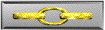

Page index / coursesCOURSE NUMBER - Internet Links. -RU 103- Russian Internet Links The following Internet links may prove useful. These Internet links that point to web sites that provide course-related information.  - An on-line Russian grammar - A useful list of Russian of links at Bucknell - Middlebury's own Russian guide - Russian link of the day - More Russian links at N.C. View original page ↗